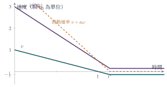

STEP III 1997，第 10 題
繼續之前，請先閱讀題目（原題為英文）。題目載於 STEP Support Programme 的題目資料庫： step.maths.org/questions/97-s3-q10
引子
用手指按住一粒波子的後半部向下一壓，波子便會一邊向後旋轉，一邊向前彈出。它從你面前滑開，慢下來，停住，然後彷彿改變了主意似的滾回來。桌球（snooker）球手打「縮桿」（screw 或 draw）時用的正是同一效應：擊打母球的下部，使它向後旋轉，碰到目標球時停住，再退回來。
本題要求的是：後旋（backspin）恰好要多大，波子才會完全停定；又要多大，波子才會以初速的七分之一返回。計算時要追蹤兩個量，即線速度（linear velocity）和角速度（angular velocity），兩者都由同一個摩擦力（frictional force）改變。這背後有一條漂亮的捷徑：兩者的某個組合完全不受摩擦力影響。
轉動動力學（rotational dynamics）已於 2019 年從 STEP 考試範圍中刪去。這裏你只需要知道：質量為 \(m\)、半徑為 \(a\) 的實心球，繞直徑的轉動慣量（moment of inertia）為 \(I = \frac25ma^2\)；而力矩（torque）\(\tau\) 按 \(I\dot\omega = \tau\) 改變其角速度，這就是 \(m\dot v = F\) 的轉動版本。
動筆之前
波子以 \(v\) 向前運動，並以 \(\omega\) 向後旋轉。波子的最低點相對桌面移動得多快？摩擦力朝哪個方向作用？
最低點因波子本身的運動而有速度 \(v\)，再加上因後旋而來的 \(a\omega\)（後旋會把最低點帶向前）。因此它以 \(v + a\omega\) 向前滑動，而摩擦力向後作用，阻礙滑動。只有當 \(v + a\omega = 0\) 時，波子才會純滾動（rolling without slipping），即只滾不滑。
逐步解題
階段 1 摩擦力的作用
設摩擦力為 \(F\)，方向向後。它對 \(v\) 有甚麼影響？它對球心的力矩為 \(Fa\)：這會增加還是減少後旋？
摩擦力使波子減速：\(m\dot v = -F\)，所以 \(v = v_0 - \frac Fm t\)。由於它在波子底部向後作用，它同時產生一個阻礙後旋的力矩 \(Fa\)：\(I\dot\omega = -Fa\)，於是代入 \(I = \frac25ma^2\) 得 \[\omega = \omega_0 - \frac{5F}{2ma}t.\] 波子滑動期間，\(v\) 和 \(\omega\) 都穩定地減少。
階段 2 完全停定
波子要完全停下來，\(v\) 和 \(\omega\) 必須在同一刻變成零。兩者各在何時變成零？
\(v = 0\) 於 \(t = \frac{mv_0}{F}\)，而 \(\omega = 0\) 於 \(t = \frac{2ma\omega_0}{5F}\)。當 \(v_0 = \frac25a\omega_0\) 時兩者相等，即 \[\frac{v_0}{a\omega_0} = \frac25. \qed\] 在那一刻，波子既無線速度亦無角速度，而摩擦力（只在有滑動時才作用）隨即消失：波子就此停在原地。
階段 3 滾回來
若後旋較大，\(v\) 變成零時 \(\omega\) 仍為正。最低點仍在向前滑動，所以摩擦力仍然向後作用。接下來會發生甚麼事？滑動何時停止？
摩擦力繼續把波子向後推，所以 \(v\) 變為負值，而 \(\omega\) 繼續減少。當 \(v + a\omega = 0\) 時滑動停止： \[v_0 + a\omega_0 - \Bigl(\frac Fm + \frac{5F}{2m}\Bigr)t = 0, \qquad t^* = \frac{2m(v_0 + a\omega_0)}{7F}.\] 在那一刻， \[v = v_0 - \frac{2(v_0 + a\omega_0)}{7} = \frac{5v_0 - 2a\omega_0}{7}.\] 此後波子只滾不滑，摩擦力不再作用，\(v\) 保持不變。要它以速率 \(\frac{v_0}{7}\) 滾回來，我們需要 \(5v_0 - 2a\omega_0 = -v_0\)，所以 \[\frac{v_0}{a\omega_0} = \frac13. \qed\]

回顧
追蹤兩個量。摩擦力同時改變 \(v\) 和 \(\omega\)，兩者的變率成固定比例。
知道力何時消失。滑動摩擦力只在有滑動時才作用；波子一旦滾動，它便停止作用。
滑動速率是關鍵變量。它線性地減少，而它變成零的一刻，正是由滑動轉為滾動的一刻。
背後的數學
一個守恆量
要求最終速率，還有一個更快的方法。考慮波子對它與桌面接觸點的角動量（angular momentum）。摩擦力正正作用於該點，所以對該點沒有力矩，而法向反作用力（normal reaction）和重力都沿着通過該點的鉛垂線作用。因此波子滑動期間，這個角動量守恆（conserved）。它等於 \(mva\)（來自球心的運動）減去 \(I\omega\)（後旋以負值計算）： \[L = mav - \tfrac25ma^2\omega.\] 當波子以速率 \(V\) 滾動時，\(a\omega = -V\)，角動量為 \(maV + \frac25maV = \frac75maV\)。令它等於初始值， \[\tfrac75maV = mav_0 - \tfrac25ma^2\omega_0, \qquad V = \frac{5v_0 - 2a\omega_0}{7},\] 答案相同，卻完全不必提及摩擦力的大小，甚至不必理會它是否恆定。最終速率單憑守恆便已確定；摩擦力只決定要花多少時間才達到這個速率。
桌球、保齡球與網球
同樣的分析可以解釋許多運動中的現象。桌球被擊中正中央時，起初滑動，然後開始滾動，最終速率為初速的 \(\frac57\)（在公式中取 \(\omega_0 = 0\)）。十瓶保齡球帶側旋擲出時，會沿球道滑行，到開始滾動時便「拐彎」。帶上旋（topspin）的網球會急速下墜，不過這裏的主要效應來自空氣動力：旋轉的球會使周圍的空氣偏轉，這就是馬格努斯效應（Magnus effect）。
科里奧利（Gaspard-Gustave Coriolis）如今因旋轉參考系中的虛擬力（fictitious force）而為人所知（第 11.5 節），他在 1835 年寫了一整本關於桌球數學的書：Théorie mathématique des effets du jeu de billard。他證明了不少結果，其中包括：帶旋轉擊出的球，在滑動期間沿拋物線運動，到滾動時才走直線；他亦精確地分析了本題的縮桿打法。研究這項運動的物理學家至今仍會引用此書。
思維技巧
當一個力同時影響幾個量時，寫下它怎樣改變每一個量，並找出一個它完全不會改變的組合。
這裏摩擦力改變了 \(v\) 和 \(\omega\)，卻沒有改變對接觸點的角動量。在大學裏，尋找這類組合是一個反覆出現的主題：選擇對哪一點取矩，使未知的力自動消去，正是選擇參考系的轉動版本。
延伸練習
上旋。若波子起初帶的是向前的旋轉 \(\omega_0\) 而非後旋，求它最終的滾動速率。\(v_0/(a\omega_0)\) 取甚麼值時它會加速？
桌球。一個球被擊中正中央，以 \(v_0\) 開始滑動而不帶旋轉。證明它最終以 \(\frac57v_0\) 滾動，並求動能（kinetic energy）損失的比例。（滾動時的動能為 \(\frac12mV^2 + \frac12I\omega^2\)。）
圓環。對一個在自身所在平面內滾動的薄圓環重做本題，其 \(I = ma^2\)。現在 \(v_0/(a\omega_0)\) 為何值時，它會以 \(\frac{v_0}{7}\) 返回？
縮桿打法。桌球球桿必須擊中球的甚麼位置（在球心以上多高，以 \(a\) 表示），球才會從一開始便只滾不滑？（提示：考慮衝量（impulse）作用期間對接觸點的角動量。）
延伸閱讀
David Morin, Introduction to Classical Mechanics（Cambridge University Press），第 8 章，講述角動量及帶滑動的滾動。
Daniel Kleppner & Robert Kolenkow, An Introduction to Mechanics（Cambridge University Press），關於剛體運動的各章。
David Alciatore, The Illustrated Principles of Pool and Billiards（Sterling）。這項運動的物理學，附有大量圖解。